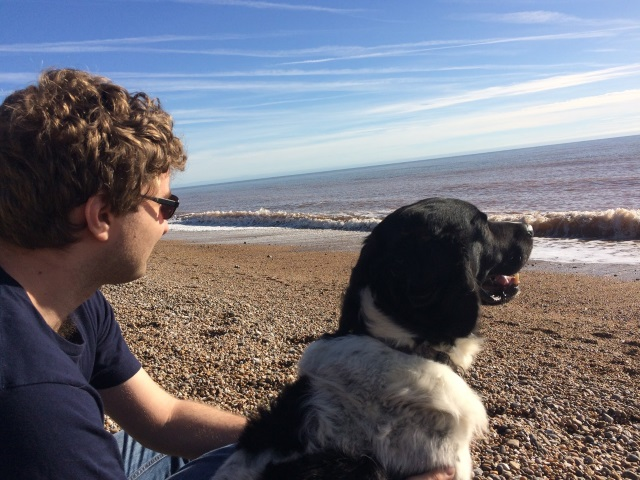

Tom Rijnbeek
Software engineer; Game developer; Coffee drinker

Software engineer; Game developer; Coffee drinker
I'm Tom Rijnbeek, an experienced software engineer and coffee drinker. My first introduction to the world of programming was through game development, and both game programming and game design are ever close to my heart. Experience with building games, my theoretical mathematics roots, and a strong feel for software architecture and design are all important to me, and have provided me with a unique set of skills. More information on my current and past projects and experience can be found below. You can also find my blog here.
I would never have gotten into programming if it weren't for games. I started making my own games using RPG Maker, but it didn't take long before I dove into the code of the engine, and started molding it into a shape I was happy with. This is where my first programming experience came from.
The RPG Maker engine was limited, but it wasn't until I learned using Microsoft's XNA Framework in university that I starting making my own games from scratch. Most games never made it past a proof-of-concept phase, though I did enter some games in the Ludum Dare, a 48 hour game jam. A particular highlight is Satellites vs Aliens, where you shoot skyscrapers into space to bump satellites into the path of the invading aliens, in a game jam where the theme was "an unconventional weapon".
Roche Fusion was the first commercial project I worked on. It was built while still attending university. The game is built on a custom game engine, using the open source OpenTK to handle graphics and audio. With just two programmers, and a small team in general, this is the project where I learnt a lot not just about game programming, but also game design.
Roche Fusion is a top-down space shoot-em up, including many roguelike elements such as perma-death, completely procedurally generated levels, randomised upgrade paths, and more. I was mainly responsible for the procedural generation systems, enemy behaviour, audio engine, and Steam integration, among other things.
The game was released on Steam in January 2015. The game has gotten favourable ratings, and received a free content update four months after release.
After Roche Fusion and finishing my master thesis, I focused on my
career as a software engineer. Many parts of Roche Fusion that we
considered useful to the wider community were released into the open
source domain as the Bearded.Utilities library (a
reference to an early codename for Roche Fusion). Two years after
the release of Roche Fusion, in January 2017, we decided to start a
new project. Bearded.TD remains under active
development today, and has the full
source available on GitHub. As
Bearded.TD grows, so do my contributions to the set of
open-source libraries that we have built around them.
As part of working on game code, I look for interesting architectural problems. Games are traditionally known to accumulate much technical debt, or make potentially bad trade-offs in the name of performance or velocity. The set of libraries in our GitHub organisation contain many tools to keep game code well designed and maintainable. Having a job outside of the games industry, while being an active maintainer of game libraries allows me to take lessons from one world, and applying to another. My blog is full of these lessons.
Besides developing my own game, I actively maintain my enthusiasm for the world of game mechanics. I enjoy analysing game mechanics in existing games, and drawing lessons out of them. Not only videogames, but also tabletop games hold an interest for me. This passion is the best when shared, and you will regularly find game design related topics on my blog, or find me contributing as producer on a podcast and online blog dedicated to the shared appreciation of the design and lore of RuneScape on RSBANDB.
Download my full resume here.
Besides spending my spare time on making and analysing games, I also enjoy playing them. It is not rare for me to comment on desicions regarding game mechanics or audio though.
Another of my passions is tabletop games, and I will happily spend hours on building for my own world with its own rich history and events. Collecting all this work into a digestable format is still work-in-progress.
})